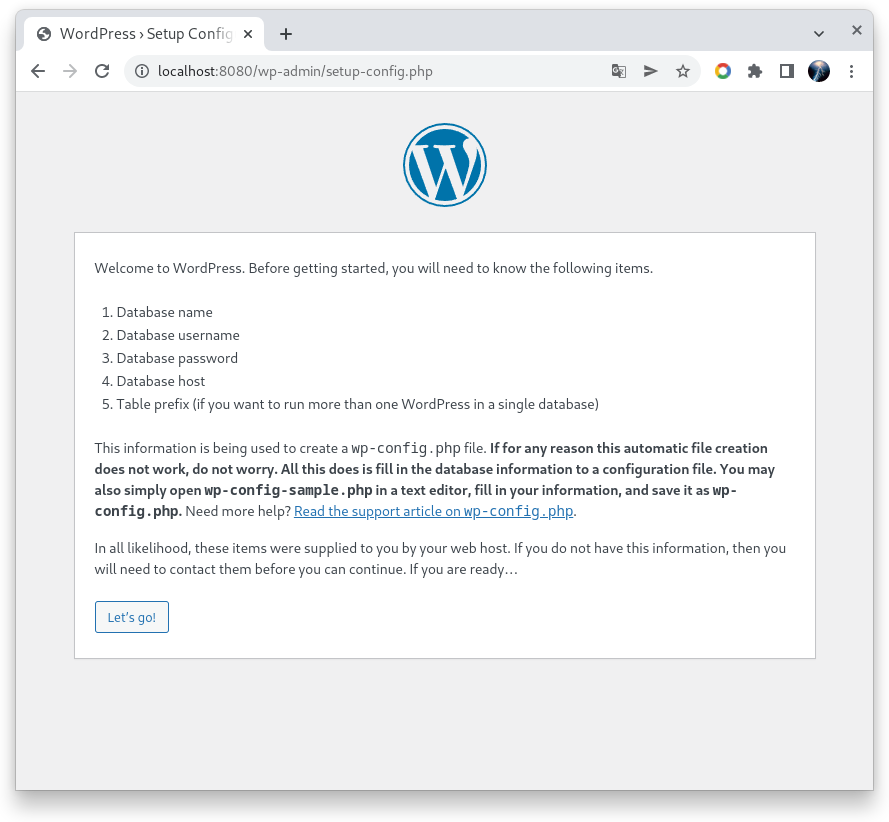
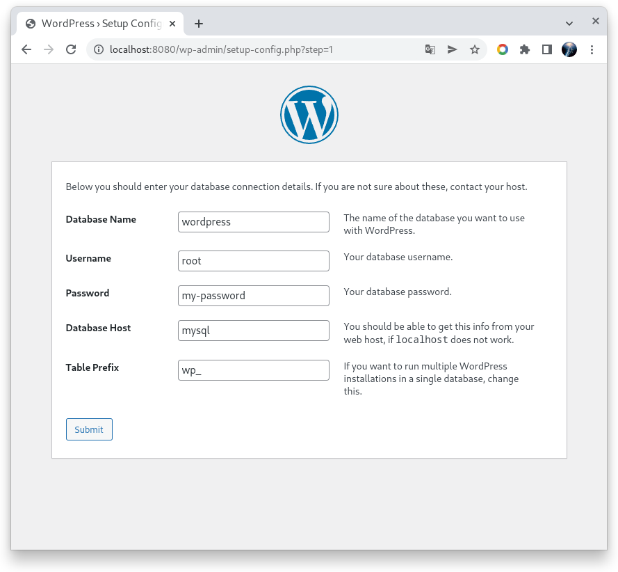
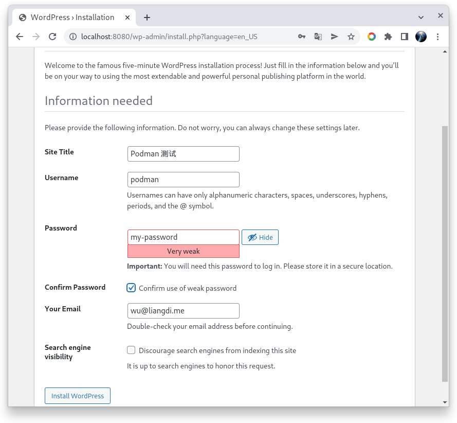
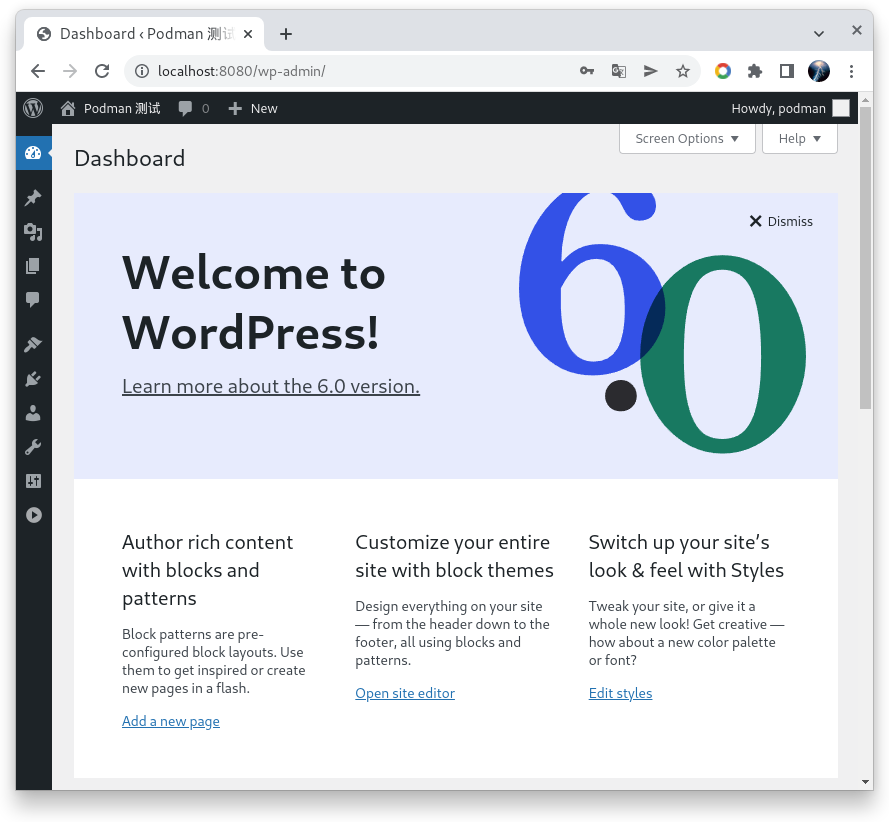
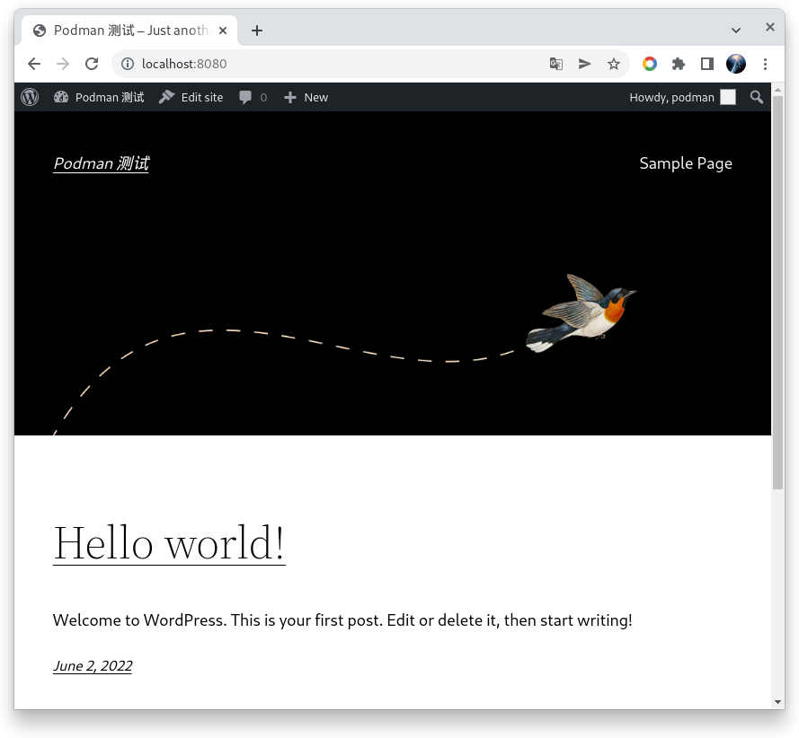
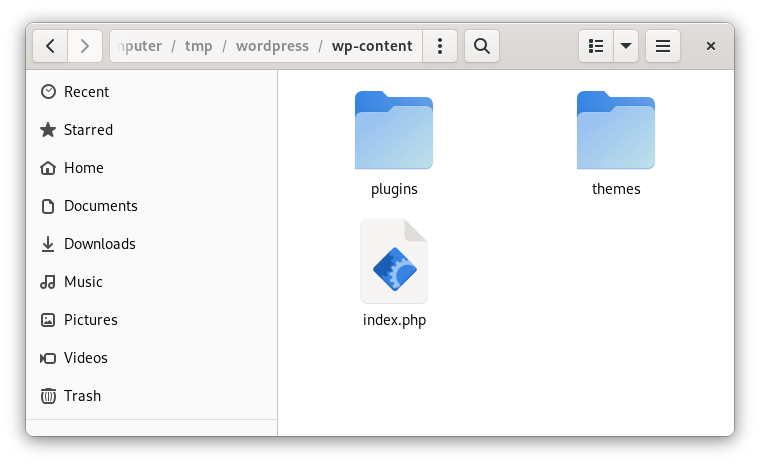

使用 Podman 运行 WordPress 6 Arturo
2022-06-02T12:37:58+08:00 | 3分钟阅读 | 更新于 2022-06-02T12:37:58+08:00
前言
今天看到 WordPress 6 发布了,回想多年以前在使用 WordPress 的时候,一顿 yum 命令安装 nginx, php, mysql, php-fpm , 然后再配置 nginx, 经过一阵子配置, WordPress 就运行成功了, 如今在云原生时代, 可以用 k8s , docker , Podman 等工具来安装这些系统了, 今天就使用 Podman 安装 WordPress , 人生苦短, 我用 podman !
认知准备
- 这次是安装一个业务系统(WordPress) , 所以不象一些 hello world 的文章, 更多要关注底层的一些东西
- 网络(network): WordPress 要和 mysql 连接, 所以需要网络支持
- 数据卷(volume): mysql 数据要保存, WordPress 的文章数据保存在数据库中,但是插件/主题,上传图片等都是保存在文件系统中, 文件系统的内容要保存下来, 就要使用到数据卷功能.
- 使用 Podman 4.1.0 版本
安装过程
网络
使用 podman network ls , 可以查看 Podman 的网络列表, 默认会有一个 Podman 的网络, 这里我们会创建一个新的网络叫做 wp-net , 使用如下命令:
podman network create wp-net
# 使用 podman network inspect 命令查看网络信息
podman network inspect wp-net
输出内容
{
"name": "wp-net",
"id": "a47201502d7f6450e7fda6c1ce7e449418350cb2b668feca2cf7d5048cb336cc",
"driver": "bridge",
"network_interface": "cni-podman2",
"created": "2022-06-02T10:45:05.864113967+08:00",
"subnets": [
{
"subnet": "10.89.1.0/24",
"gateway": "10.89.1.1"
}
],
"ipv6_enabled": false,
"internal": false,
"dns_enabled": true,
"ipam_options": {
"driver": "host-local"
}
}
]
MySQL
创建好 wp-net, 后,我们创建 mysql 容器,并且把它加入到 wp-net 中 , 命令如下:
# 创建存放 mysql 数据的临时目录
mkdir -p /tmp/mysql-data
podman run --name mysql \
--net wp-net \
-e MYSQL_ROOT_PASSWORD=my-password \
-v /tmp/mysql-data:/var/lib/mysql \
-d docker.io/library/mysql:8
说明:
- –net wp-net 参数就是把创建的 mysql 容器加入到 wp-net 这个网络中, 并且使用 –name mysql , 这样网络中的其他容器就能使用
mysql这个网络名,解析出 mysql 容器的 ip 了, 也可以使用 –hostname 参数来指定网络主机名. - -e MYSQL_ROOT_PASSWORD 设定 mysql root 密码
- -v /tmp/mysql-data:/var/lib/mysql 将主机的 /tmp/mysql-data 目录映射到容器中 /var/lib/mysq 目录, 这就是数据卷(volume) 的功能,这样数据就可以保存到主机中,这里在 tmp 目录创建方便临时测试,volume 功能也可以使用 podman volume 命令创建命名的数据卷.
- 这里没有使用 -p 3306:3306 类似的端口映射参数,因为我们 host 不需要去访问 mysql ,容器网络中访问不需要映射端口.
创建好 mysql 容器后可以使用以下命令做些检查
# 使用 ps 命令可以查看运行中的容器, 这里应该可以看到 mysql 容器
podman ps
# 使用 exec 命令可以运行容器中的程序, 这里运行 bash ,就可以进入容器的 bash 中运行其他命令了.
podman exec -it mysql bash
Wordpress
mysql 容器运行后,就可以去创建 WordPress 了, WordPress 镜像的详细信息可以去 docker hub 去看: https://hub.docker.com/_/wordpress
WordPress 中会用到的配置主要是: 数据连接信息, 可变的内容主要是 wp-conent 目录下的主题/插件,上传文件信息, 如果你不去使用环境变量配置数据库信息, 那么动态配置的 wp-config.php 也是可变的.
运行 WordPress 的容器命令如下:
# 我们先用最简单的命令运行 wordpress 容器, 尽快见一下久违的 wordpress
podman run --name wordpress \
--net wp-net \
-p 8080:80 \
-d docker.io/library/wordpress:6
创建好后, 我们就可以访问 http://localhost:8080/ 我见证 WordPress 的安装了, 因为没有配置数据库信息,所以 WordPress 进入了数据库配置页面: 

这里 database host 只需要填写 mysql 即可, 容器中会自动解析 mysql 容器的 ip.
WordPress 不会主动去创建数据库,所以我们需要进入 mysql 容器去创建一个 wordpress 的数据库. 命令如下:
# 进入容器
podman exec -it mysql bash
# 使用 root 密码 my-password 登陆数据库
mysql -u root -p
# 创建数据库
create database `wordpress`;
#完成后就可以退出了,继续下一步安装 wordpress



到此, WordPress 6 测试安装完成了.
上面创建的 WordPress 容器没有使用数据卷功能, 那么如果你上传了一些图片信息,安装了一些插件,这些内容都保存在容器里面,如果有一天容器被删除了,也就没有了,我们现在重新创建这个 wordpress 容器,并且使用数据卷功能,将可变的目录映射到 host 中.
先删除现有的 wordpress 容器
podman rm -f wordpress
# 创建用于测试的临时目录
mkdir -p /tmp/wordpress/wp-content
podman run --name wordpress \
--net wp-net \
-p 8080:80 \
-v /tmp/wordpress/wp-content:/var/www/html/wp-content/ \
-e WORDPRESS_DB_HOST=mysql \
-e WORDPRESS_DB_USER=root \
-e WORDPRESS_DB_PASSWORD=my-password \
-e WORDPRESS_DB_NAME=wordpress \
-e WORDPRESS_TABLE_PREFIX=wp_ \
-d docker.io/library/wordpress:6
现在我们去看 /tmp/wordpress/wp-content 目录, 可以看到已经有相关目录出现在其中了,这样容器即使被销毁,这些数据也是保存在 host 中了. 
总结
5-10 分钟就将 WordPress 安装好了, 基本不需要去做系统配置(nginx,php,mysql). 这正式容器技术带来的便利.
文章中使用了 Podman 的基本功能, 有以下方面需要注意
- Podman 容器默认不会跟随系统启动, 需要配合 systemd 服务启动, 具体可以查看 https://docs.podman.io/en/latest/markdown/podman-generate-systemd.1.html
- 数据卷(volume) 更多功能使用 podman volume –help 命令查看, 可以配置 nfs 的 volume 等.
- 应用和数据库组合的容器组可以使用 podman-comose 实现, 也可以使用 Podman 的 pod 功能实现,具体查看官方文档.